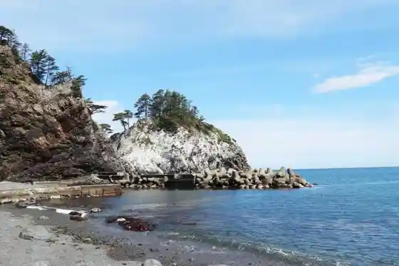
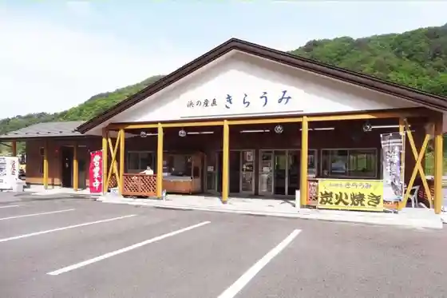
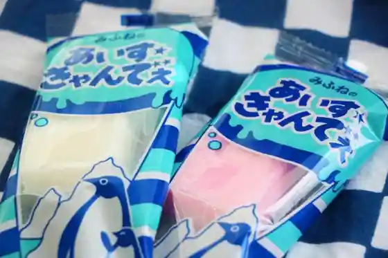
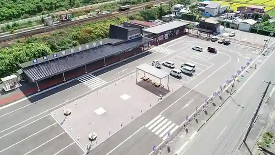

Nedari Hama
Fudai, Iwate · 0194-35-2114 · Official / source link

Hama no Sanchoku Kiraumi
Fudai, Iwate · 0194-35-2114 · Official / source link

Mifune no Aisukyande
Fudai, Iwate · 0194-35-2020 · Official / source link

Roadside Station Ao no Kuni Fudai
Fudai, Iwate · 0194-35-2411 · Official / source link

Ochiai Sanchoku Center
Fudai, Iwate · 0194-35-3589 · Official / source link
Suki Kombu
Fudai, Iwate · 0194-35-2114 · Official / source link
Rikuchu Kurosaki Lighthouse
Fudai, Iwate · 0194-35-2114 · Official / source link
Fudai Kombu Shohin
Fudai, Iwate · 0194-35-2114 · Official / source link
Fudai Hama Enchi Kiraumi Beach
Fudai, Iwate · 0194-35-2115 · Official / source link
Fudai no Antenashoppu Aide
Fudai, Iwate · 0194-35-2411 · Official / source link
Fudai Suimon
Fudai, Iwate · 0194-35-2114 · Official / source link
Miyazawakenji Shihi (Kurosaki Lookout)
Fudai, Iwate · 0194-35-2114 · Official / source link
Miyazawakenji Shihi (Matsuiso Park)
Fudai, Iwate · 0194-35-2114 · Official / source link
Kurosaki Lookout
Fudai, Iwate · 0194-35-2114 · Official / source link
Kurosaki Oto Campground & Kurosaki Campground
Fudai, Iwate · 0194-35-2115 · Official / source link
Shirai Kaigan Eki
Fudai, Iwate · 0194-35-2114 · Official / source link
Osawa Kyoryo
Fudai, Iwate · 0194-35-2114 · Official / source link
Anmo Ura Falls
Fudai, Iwate · 0194-35-2114 · Official / source link
U Tori Kagura
Fudai, Iwate · 0194-35-2339 · Official / source link
U Tori Shrine
Fudai, Iwate · 0194-35-2339 · Official / source link
Hokui 40° Shimboru to
Fudai, Iwate · 0194-35-2114 · Official / source link
Kurosaki Enchi
Fudai, Iwate · 0194-35-2114 · Official / source link